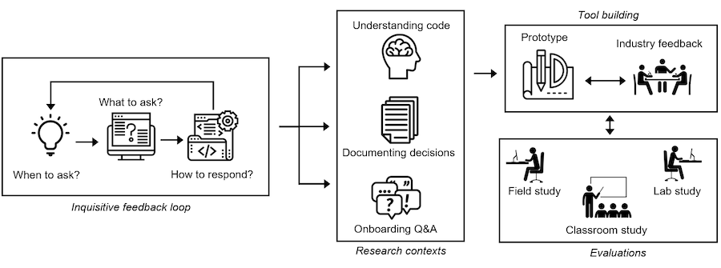
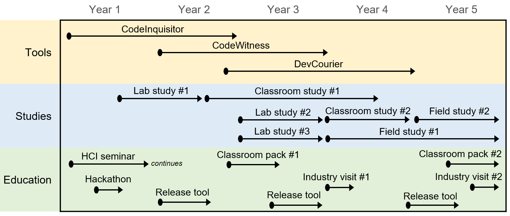

I work on dev tools.
See the discussion of this post on Hacker News.
A large part of being a professor at a research university is writing grant proposals.
But it is hard to learn how to write proposals. Very few proposal documents are ever shared publicly. You basically have to ask colleagues to share theirs or give feedback on your drafts. You might get the chance to review proposals for a funding agency, which lets you see part of how the decisions are made. You do get feedback after submitting a proposal, though it comes many months later and can be hard to decipher.
So I'm sharing my NSF CAREER proposal document (pdf) and why I wrote it the way I did.
The CAREER Award is a special 5-year grant that can only be applied for 3 times by an individual researcher in the first 6ish years of their career. It is deemed "prestigious" and at many schools it effectively means you'll get tenure.
I was offered the award, but I declined it. Then I resigned from my faculty position and joined industry.
The remainder of this post contains my thoughts that went into the proposal document and writing process. If you want to know a bit more about the research topic, check out my blog post, An inquisitive code editor: Overcome bugs before you know you have them.First, let me give some context and a warning:
In other words, take my advice with lots of salt.
It is probably smart to ask a colleague to review your draft and to use whatever other resources you have access to. But maybe none of it matters as much as we think it does? It just has to be good enough.
I spent a lot of time on how to structure my proposal. I suggest being very intentional about the organization of the document. It is so important to convey an overview, that I made a figure for it:
There isn't a generic organization that will work for all proposals. Here is a sketch of mine:
My proposal is actually proposing 3 distinct projects that fall under a core idea. If you do this, it is important to first motivate the big idea, motivate why you need to look at the sub-ideas, and then zoom back out to connect each with the big idea again.
I was worried reviewers wouldn't like this. First, it makes the proposal more about "breadth" than "depth" of my idea. Second, it required a lot of additional related work.
Something you will notice: the sections describing what I will actually do are quite short. See the three "Research plan" sections (4.1.3, 4.2.3, and 4.3.3) to see what I mean. The motivation deserves more space than the specifics of what you'll do. It was my goal to convince the reader that I do have a concrete plan and that I know how to carry it out.
My mindset was that I'm trying to paint a picture in the reviewer's head. I am not trying to be comprehensive. There just isn't space for it. Don't be afraid to break away from the formalities of typical conference/journal paper writing to make a point.
When I was on a review panel for the NSF, I was surprised how often the other reviewers would ask, "but is this the right person to do this research?". So don't give them an opportunity to question whether you are the right person!
Demonstrate that other people care about your work through Letters of Collaboration, and call out those collaborations throughout the proposal. I had 8 letters of which 6 were from industry partners and 2 were from academics.
Relate to your prior work. Do it a lot. Again and again. Give numbers from results. Give concrete examples.
Relate everything back to your big goal. Explicitly. Really drive it home. You don't want the reader getting lost.
Your prior work doesn't have to 100% line up with what you are proposing. It probably won't. With a little creativity you can find a connection. Explicitly state that connection (don't assume the reader will make it).
People told me I needed to have half the work already published to prove the idea is feasible. I did not do this. I only had a short paper (pdf) discussing a small part of the idea.
There are a lot of activities in grant proposals, so I think it helps to give a visualization of the timeline. No one expects it to happen like this. It is more for conveying that you have a reasonable plan and that there are enough substantial components to warrant the grant. I tried to interweave "big" pieces and "small" pieces to make it more compelling. Honestly, if I had completed half of this proposed work then I would have felt successful.
Broader impacts are everything. In fact, after submitting my first proposal (NSF CRII), someone from my college said, "your entire proposal is broader impacts", and suggested I add more "basic research" next time. I didn't listen.
A lot of researchers seem to struggle with broader impacts and the education plan. These sections often get tacked on at the end. You aren't fooling anyone. But these sections are actually an opportunity to stand out. Get creative! I spoke about my blog, a podcast, and running a hackathon. These were all things I would do anyway and serve multiple purposes (e.g., getting my work out there). I also wove broader impacts into all of the "actual" research.
I didn't have a Conclusion section. I didn't want to spend space on a section that adds no new value, especially when I've already repeated my main points multiple times already.
Before you ship it, go add some pizzaz. I always scroll through the pages and ask myself, "how boring does this look?". I wanted a pretty picture on nearly every page, but didn't have the space. Use formatting for your benefit. Bold or italicize to call something out.
What did I budget to spend the money on? All 3 my NSF proposals essentially had the same budget with minor tweaks to get it under the limit. Each year consists of: 1 month of summer salary for myself, 1 grad student at an above-average salary plus tuition, no equipment, alternating international and domestic conference trips for both myself and the grad student, and funds to pay participants in user studies. My university took a whooping 53% for overhead.
Hope that helps! :)
Like this post? Consider supporting me on Patreon!